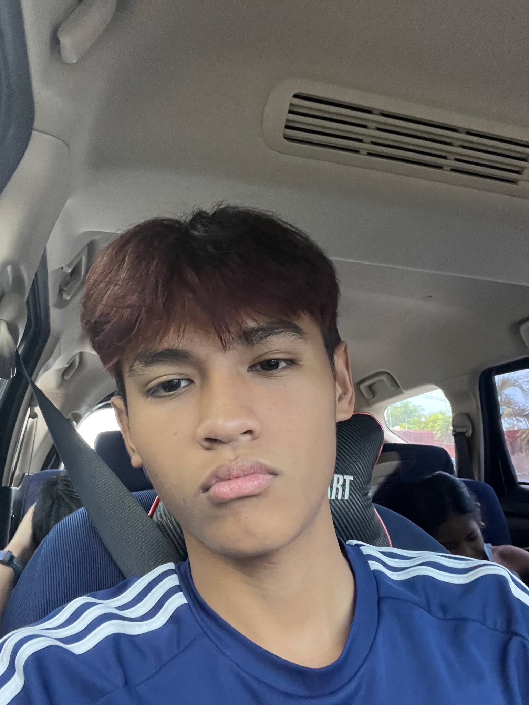

Computer science / IT student building small, working things — web pages, Java and Python programs, and the occasional discrete math proof turned into code.
This page is my running portfolio for the term: what I've shipped, what I'm learning, and where to reach me.
Took a hand-drawn wireframe from paper to a responsive HTML/CSS page — profile section, navigation, and a checklist-style project list, built to match the original sketch.
Small tool for stepping through set operations and truth tables, built to make the discrete math coursework easier to check by eye.
Collecting the term's Java and Python assignments into one browsable, documented repo — in progress alongside this portfolio.